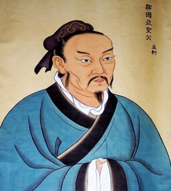

“亚圣”孟子简介
孟子（公元前372年—前289年），名轲，字子舆，战国时期邹国（今山东邹城）人。孟子是“鲁公族孟孙氏之后”，后来家道衰微，从鲁国迁居邹国。孟子幼年丧父，由孟母抚育成人。孟母通过“三迁之教”，使孟子最终确立学于“先王之道”的志向，后师从于“子思之门人”，并以孔子“私淑弟子”自许。
孟子深得孔子学说真传，一生以“正人心，息邪说，距诐行，放淫辞，以承三圣”为己任，被后世赞誉为“孔子以后一人，功不在禹下”，成为儒家“亚圣”。为了挽救战国时期混乱的社会秩序，孟子收徒讲学、游说诸侯，极力宣扬孔子学说，并对引起思想混乱的异端学说进行猛烈抨击，以匡扶儒道。孟子一生追求“行王道”“施仁政”，晚年退居邹国，专心教授弟子，“与万章之徒序《诗》《书》，述仲尼之意，作《孟子》七篇。”后代对其多有追封，北宋被封为“邹国公”，元代被封为“ 邹国亚圣公”，明嘉靖九年（公元1530年）被封为“亚圣”。
其主要思想为：
人性本善的哲学思想。“性善论”是孟子学说的基础与核心，孟子认为“人皆有不忍人之心”。“人皆有之”的善性是先天固有的，它表现为“仁义礼智”四端，“恻隐之心，仁之端也；羞恶之心，义之端也；辞让之心，礼之端也 ；是非之心，智之端也。”端就是发端、萌芽，“仁义礼智”四端只是道德的萌芽，一个人只有经过后天的扩充、修养，才能发展成为有道德的君子。孟子的其他学说都以此为基础。
关爱民生的仁政思想。“尧舜之道，不以仁政，不能平治天下。”孟子崇尚先王，崇尚仁政，其精髓在于关注百姓的生存权利，要求统治者“不嗜杀人”“使民以时”“制民之产”“省刑罚”“薄税敛”“使民养生丧死无憾也”，然后“谨庠序之教，申之以孝悌之义”，让百姓懂得“父子有亲，君臣有义，夫妇有别，长幼有序，朋友有信。”
保民而王的民本思想。孟子提出“保民而王，莫之能御也”“民为贵，社稷次之，君为轻”“得天下有道：得其民，斯得天下矣。得其民有道：得其心，斯得民矣。得其心有道：所欲与之聚之，所恶勿施尔也”，民心的向背决定着政权的存亡。孟子把那些残害百姓的统治者，视为“独夫民贼”，予以猛烈抨击。
浩然正气的人格思想。孟子强调人特别是士人的人格尊严。他说：“我善养吾浩然之气”，鼓励人们要做“富贵不能淫，贫贱不能移，威武不能屈”的大丈夫，要有为了天下正义“舍我其谁”的责任意识和“舍生取义”的牺牲精神。

-- 中共山东省委组织部主办 --
Copyright 2013-2017 中共山东省委组织部 All rights reserved
鲁ICP备09016644号-3 地址 : 山东省济南市 技术服务热线 : 400-690-7927